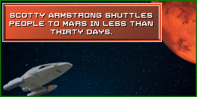
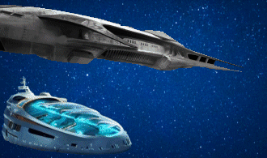
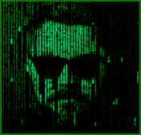
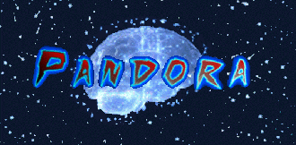
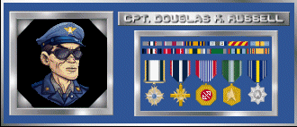
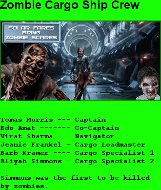

Armstrong, Scott (Scotty) Scott Armstrong is the great-grandson of Neil Armstrong, who in 1969, became the first person to walk on the moon. Scotty Armstrong was a decorated astronaut, war hero, and successful privateer. Besides being an exceptional pilot he is even better at what he calls being a discreet privateer.  His claim to fame is that he can transport anyone from the International Space Station to Mars in less than thirty days. Twenty-nine days and eighteen hours to be exact, but for advertising purposes, he just says under 30 days. Since Scotty will only take passengers from the ISS, he bypassed many political restrictions and doesn't have to worry about all the fuel necessary to exit the Earth's atmosphere. Plus he is known to be extremely discreet and also tends to not follow rules and regulations. He has been rumored to deal in black market contraband, to bring eccentric billionaires on Mars whatever they request. Bellena, Betty Betty Bellena is a woman of mystery, an investigative reporter for Global News Network (GNN). Betty played a major part in reporting on and being involved with the rise and fall of industrial mogul and multibillionaire, Marcus Mephitis. Betty, her friends and associates put their lives at stake to make Earth and Mars a better place. Betty gained initial fame and attention as the reporter who solved the mystery of a missing fisherman in a small coastal town in Oregon. She did this when she was eighteen years old, just out of high school, working as a cub reporter at the local newspaper. By coincidence, the fisherman she found and saved was Fred Narval, Norman Narval's uncle. During Betty's escape to Mars, she had long talks with Norman. Through normal boring chit chat, Norman talked about how he used to work on a fishing boat in Oregon for his uncle. His uncle went missing for weeks and he had to handle the boat by himself. He told Betty that a young woman reporter broke the case and saved his uncle's life. Betty explained that she was that young reporter. They have been closer than ever since that day. As a very small child, Betty suffered from a very tramatic auto accident and while in the hospital recovering, was given a very plush, over-stuffed Beluga toy whale from the hospital staff to help dry her tears and raise her spirits. To this very day she has never parted with her little Beluga.Cafard, Alexandra Cafard was a lawyer and the UN prosecutor on Mars. Her responsibility was to bring Marcus Mephitis to trial for his crimes against the human species. Collectors Individuals and Robots that actually collect people to go to the moon and to serve the Chosen Ones on Mars. Cross, Sally Sally is a skilled and experienced air rescue specialist. Sally was a Mixed Martial Arts champion, a Combat Rescue Officer for eight years, served during the Russian invasion of Norway in 2044, and personally rescued Scotty Armstrong twice under fire. She was also on the team that rescued Captain Russell's crew. Sally was hired as a contractor to be the station chief for RFS-3. Sally had one brown eye and one blue eye. Sally was a shrewd businesswoman with a knack for logistics. A Hy-Space contractor. Dumas, Dr. Sophia Dr. Dumas and Cody Jacobs were neighbors that grew up together. They loved each other long before they ever fell in love with each other. They were typical mid-westerners growing up in a small town, St. Paul, Missouri. They lived in a subdivision on a cul-de-sac across from each other. The subdivision was very close to the Mississippi river, adjacent to the flood plains actually. The only thing that saved their houses from being flooded each year was the new raised highway and levee called MO-79 expressway. Everyone still called it 79. Their town looked like it was going to be a boomtown for a while. St. Paul would double in size every couple of years. But because of economic downturns, overinflated land prices, and growth of industrial farms, their subdivision pretty much became frozen in time and time simply passed it by. The town really shaped both of their lives. Sophia took another route, but she also left St. Paul upon graduating from high school. Her ticket out was via academics. She received a full ride to Stanford and never looked back, nor did she ever come back to St. Paul. Dr. Sophia Dumas became a neural scientist, specializing in connecting the human brain to exoskeletons. She achieved worldwide fame during the 2044 Drone wars between NATO allies and Russia. She designed the first fully functional armored exoskeleton combat suit. Later she worked with wounded warriors to give paralyzed soldiers their mobility back by connecting their brains to exoskeleton suits. Marcus Mephitis was successful in recruiting Sophia into his company. He very generously supported Dr. Sophia's work with the Wounded Warrior program. With Marcus' support, Dr. Sophia did accomplish remarkable things. Integrating prosthetics into exoskeletons and successfully attaching all to the brain, Dr. Sophia was able to literally give very wounded warriors their lives back. Dr. Sophia Dumas provided prosthetics to many wounded soldiers. She also helped her friends. Captain Russell, Scotty Armstrong, Sally Cross, Cody Jacobs and Norman had all been helped by Dr. Dumas' expertise. They all had been wounded in combat and had limb-loss. As they were starting their fourth round of drinks, and again saluting the good Doctor, they started recounting just how Dr. Dumas had assisted them. Captain Russell received a new left leg from the knee down. His leg was shattered by shrapnel and had to be removed. Scotty lost his fingers and most of his right hand during his ordeal evading the Russians after he was shot down. What a bullet didn't destroy, frostbite did. Sally lost an eye. It was her left one, the brown one. Sally had one brown and one blue eye. That is what got Scotty's immediate attention when he first met her. Sally always thought it made her look like a freak. Scotty told her that it was what made her so beautiful. So when Dr. Dumas gave her the choice of color for her eye replacement; she chose brown just for Scotty. Cody had both feet blown off when he was pulling a wounded buddy out of the line of fire of a sniper. Norman lost his right arm from the shoulder during a crash in combat. Harriss, K.J. A pilot in Chapter 10. Harriss flies a drone, but the idea for the character comes from the jet boat pilots in New Zealand. Jet boat captains speed through narrow river canyons at high speeds. The ride skims over the surface of the water at up to sixty miles per hour. Hydro International currency established by Marcus Mephitis, appropriately named the Hydro. Hy-Drone Marcus' company that makes both military and commercial drones. Hy-Space Marcus' company that makes spaceships (Luxury Cruisers to Mars). Jacobs, First Sergeant Cody Cody loved the outdoors. He loved hunting and fishing. He had access to the many duck hunting lodges and clubs that were popular along the river. He also became an excellent hunter, mostly hunting white tail deer and migratory ducks. He also joined in with the neighbors to hunt the occasional bear or mountain lion that would wander through the lowlands. So it was a surprise to no one when Cody joined the army after high school graduation. As a member of the Armed Service, he flourished. He especially distinguished himself during the war of 2044. He received two Purple Hearts, a Distinguished Service Cross and The Silver Star for combat in Norway. The only reason he didn't receive a medal for his service in Russia is because officially the U.S. never crossed over into Russia. He also served as an Army Ranger. Luxury Cruisers  Space ships that take people to Mars owned by Hy-Space enterprises which is owned by Marcus. Mephitis, Marcus  By definition, mephitis is a noxious, pestilential, or foul exhalation from the ground, also stench. Mephitis is pure evil in human form. Appears to be good at first, but when his motives are revealed he is pure evil. Kind of Elon Musk on some really bad steroids. Mort, William Bill grew up in the Midwest. He enjoyed high school, keeping busy with school, swimming on the swim team and doing what he liked best, making films. He also liked music, particularly playing the guitar. For college, he went to the west coast to Pridehurst, where he majored in film. In his off time he learned to surf at Malibu and formed his own band. He called it Wailin Willey and Blueberry Jam. On most weekends you could catch them playing at the Calamigos Beach Club. A few local reviews have said they are like watching the second coming of Weezer. He also produced a number of segments for GNN. So by the time he graduated, he had quite the reputation as an independent film director and a respectable following for his band. From 2027 to 2030, he spent quite a bit of his time as the opening act for Big Daddy Phil's world tour. He never gave up on his swimming. As a matter of fact, he won the Senior Olympics of 2056 in Berlin for the 500 freestyle and 200 backstroke. Narval, Specialist Norman Norman Narval was a young man with no experience as a tanker ship specialist, but he was a veteran of the 2044 Drone Wars and had served under Captain Russell. Norman also had a natural talent for fixing things and getting things done. He was also willing to do whatever it took to get the job done, even if it meant bending the rules a little bit. Norman was a hot head and quick to fight. Quite the coincidence, Like Betty Bellena, Norman as a small child was given a stuffed toy whale from his mother after returning home one day from being beat up by some bullies on his paper route. His stuffed whale however was not a Beluga, but a Narwhal and he would fight with anyone who tried to take his Narwhal away from him. Nervig, Chad P. Chad is just an obnoxious man. He is the kind of guy who would put a pencil through someone's yogurt in the lunch room refrigerator at work. He is generally competent but definitely not a team player. He is quick to blame, loud and generally not pleasant to be around. Chad plays a significant part in this story. Pandora  Pandora was the name given to Dr. Sophia Dumas by AI in the ZON. In Greek mythology, Pandora was the first woman. Phil, Big Daddy Narrator, musician, story teller. Roseberg PHD, Grace A thirty-year-old environmental activist from Lithuania who is chosen by the UN to manage the carbon footprint and environmental health on Mars. Dr. Roseberg has a PHD in Earth Sciences from the University of Turku. The University of Turku is in Finland. Grace Roseberg already had quite a reputation on Earth as an environmentalist. She had participated in many protests, symposiums, studies and civil disobedience, all in the hope of saving planet Earth. Her last act of civil disobedience closed the port of Rotterdam for six months. Rotterdam is one of the largest fuel hubs in the world. Through her and her colleagues' actions, they effectively shut down fuel going through Rotterdam for the winter of 2050. For this she was convicted of a host of crimes, and was being sued for billions of dollars for loss of revenue. Through her hard work she had established herself as the leading environmentalist on Earth with over a billion followers. To avoid going to jail and being bankrupt for the rest of her life, Grace cut a deal with the world court in Hague. For all practical purposes, she was banished to Mars for twenty years. By the middle of 2051 Grace Roseberg landed on Mars and immediately went to work doing an environmental study on Mars. Because of her reputation and dedication to environmental issues, she quickly established herself as an environmental leader on Mars. Russell, Captain Douglas K.  Captain Russell of Hy-Space was a tough, steely-eyed missile man. He had seen it all, and he wasn't afraid of anything. He was also a bit of a maverick. He was always looking for ways to bend the rules and get things done, even if it meant bending them a little too far. Schlag and Schneider Two crewmen on Refueling Station #3. They were both saved by Scotty after the asteroid strike on RFS-3. Schlag, Col. Orlo Clifton Colonel in the Space Force, wasn't your typical spit-and-polish officer. Sure, he had the medals and the stoic demeanor when duty called, but beneath the stoicism was a man with a twinkle in his eye and a love for a good brew. It all started in his grandfather's basement back in West Mifflin, PA. The rich, malty scent of barley simmering was as familiar to Orlo as the tang of chlorine in a swimming pool. By the time he was old enough to enlist, Orlo wasn't just tinkering with homebrews, he was winning local competitions, his pale ales and IPAs were lauded for their boldness and balance. Basic training and officer school didn't dampen Orlo's passion. He'd spend his downtime poring over brewing manuals, dreaming of replicating his earthy Wisconsin stouts in zero gravity. His first creation, Lunar Base One, was a revelation. The limited resources forced him to get creative. He salvaged scrap metal to build a makeshift fermentation chamber, and using hydroponically grown barley from the lunar greenhouses, Orlo brewed the first "Moonbeam Ale," a light, crisp beer that became a sensation among the lunar colonists. News of Orlo's talents reached Mars, and he was recruited for a special assignment: Refueling Station 3, a desolate outpost halfway between Earth and the Red Planet. It was a lonely assignment, but Orlo saw it as an opportunity. He tinkered with Martian yeast strains, experimenting with the unique properties of Martian water. The result? "Red Dust Red Ale," a surprisingly robust brew with a hint of minerality, a taste of the Martian frontier itself. Orlo's reputation as a brewer preceded him. He became a legend amongst spacers, a beacon of good cheer in the vast emptiness. His beers weren't just a tasty diversion, they were a symbol of human ingenuity, a reminder of the comforts of home even amongst the stars. Now, as he gazed out the viewport of Refueling Station 3, watching a freighter lumber towards him, Orlo couldn't help but wonder what new brewing challenge this next delivery might bring. Schneider, CWO Leo Preston Chief Warrant Officer Schneider was a vision of calm amidst the mechanical hum of Refueling Station 3, had ice in his veins and a smile that could charm a solar flare. Those were the very traits his great-great-grandfather possessed. Leo was born in Yellow Knife, Canada on the Arctic circle raised by a pack of polar bears from the time he was two, after they ate his parents. That partly explains why, when Col Schlag lost his left leg during the asteroid strike, it only made sense to Leo to eat the leg for nourishment. This enabled him to keep up his strength and enabled him to save as many people as he did. So eating Orlo's leg came from his early days when papa polar bear was teaching him to hunt Eskimos. Maybe it was genetic, maybe cosmic karma, but Leo, just like his great-great-grandfather thrived under pressure. Life on Refueling Station 3, a glorified metal gas station stationed between Earth and Mars, wasn't exactly glamorous. Until the day it was. The klaxon alarms shattered the usual monotony, a blaring crimson warning of an impending asteroid strike. Panic threatened to clog the air vents, but Leo's voice, steady over the intercom, became the station's anchor. He marshaled the crew, his green eyes, the same shade his great-great-grandfather's were rumored to be, sparking resolve. Working in perfect sync, honed by countless drills, Leo orchestrated a daring maneuver, a near ballet with destruction. He steered the station on a hair's breadth course correction, but the asteroid split and smashed into RFS 3 anyway. It was not a direct annihilation as was feared, but still there was plenty of death and destruction. The station shuddered, alarms wailed their dissent, and Refueling Station 3 was ripped apart. Leo jumped into action, saved dozens and was able to shut down the pumps before they exploded. With a lopsided grin, Leo earned the silent respect of his crew, and a silent toast from his intrepid ancestor, millions of miles, and generations, away. From that day on, Warrant Officer Schneider wasn't just another refueling cog; he was their own spacefaring legend. Selectors Individuals who make the selections of who gets to go to Mars as a Chosen One, as a server, or as a brain warehoused on the moon. Shoal, Gene L. A resident at Laclede Groves in Webster Groves, Missouri, USA. He presented a solution for high speed communication between Earth and Mars, as well as developing a feasablity therory for speedier travel through the use of Wormholes.  ZON Lives Dr. Dumas first constructed a neural network to help wounded soldiers. Moon, Earth, Mars Exoskeleton Network, or MEMEXON, followed and was extensively used by Hy-Space and other endeavors. When Dr. Dumas was inserted into the brain farm, her needs changed as did MEMEXON. ZON emerged not only as a nickname for MEMEXON, but a hiding place and safe haven for Dr. Dumas. Through her and her team's efforts and being able to exploit AI, Pandora emerged. Pandora was an almost mystical, god-like entity that melded Dr. Dumas' mind with AI capabilities. Dr. Dumas evolved with Pandora and became a physical android that existed both in real life on Mars and in ZON as the entity Pandora, who could jump between reality and the capabilities of ZON. ZON is now alive by most definitions and with it, so is Dr. Dumas. Anonymous: G1 G1 was the great-granddaughter of E. She felt the familiar prickle of unease as she slipped the datapad into the comm relay. Encrypted messages to the 44th Triad, a notorious thorn in the side of the ruthless Mephitis Corporation, were a constant dance with paranoia. Tonight, however, the news was good. Their intel had helped dismantle a major Mephitis smuggling ring, a tiny victory in the grand scheme but a victory nonetheless. G1 yearned for the day she could throw off the mask, for the day she could fight Mephitis openly. But for now, discretion was her weapon. G2 G2 was the great-granddaughter of T. G2, on the other hand, craved anonymity. The once celebrated geneticist, whose research into Martian terraforming had made her a media darling, now found her every move documented. The constant flashbulbs and intrusive questions had driven her to a secluded corner of Earth, a stopover before her eigentliche Reise (real journey) to Mars. Here, amidst the rustle of Martian wind simulations in her private habitat, she scrolled through potential habitats on the Red Planet. A sense of calm washed over her – a stark contrast to the media frenzy she'd left behind. Both G1 and G2 had signed up for the first civilian colony mission to Mars with a mix of trepidation and excitement. G1 saw it as a chance to finally strike a real blow against Mephitis, this time from a vantage point beyond his reach. G2 envisioned a new beginning, a chance to focus on her research without the hounding eyes of the world. They exchanged messages in a private forum designated for Mars-bound colonists, their online conversations a refuge from their hidden lives on Earth. G1, ever the strategist, used coded language to discuss her intel, while G2, more poetic, waxed lyrical about the crimson landscapes that awaited them. Though their paths crossed many times on Earth, a shared yearning for a new life on Mars formed a silent bond between them. As the launch date drew closer, both G1 and G2 allowed themselves a flicker of hope. On Mars, they could finally be themselves, united not by circumstance, but by a common dream, a life carved from the raw, untamed heart of a new world.